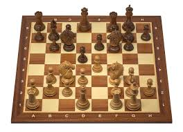

체스 소개
체스는 흑과 백의 두 플레이어가 번갈아 말을 움직이며 상대의 킹을 체크메이트하는 전략 보드게임입니다. 8x8으로 이루어진 64개의 칸 위에서 킹, 퀸, 룩, 비숍, 나이트, 폰을 활용해 공격과 수비를 계획합니다.
초보자도 기본 규칙과 말의 움직임만 익히면 바로 시작할 수 있고, 실력이 늘수록 다양한 전술과 전략을 배울 수 있습니다. 또한 온라인 체스를 통해 시간과 장소에 구애받지 않고 어디서나 쉽게 즐길 수 있습니다.
처음 배우는 체스
체스를 처음 접하는 초보자가 기본 규칙, 말의 이동, 기본 전략을 차근차근 익힐 수 있습니다.


체스는 흑과 백의 두 플레이어가 번갈아 말을 움직이며 상대의 킹을 체크메이트하는 전략 보드게임입니다. 8x8으로 이루어진 64개의 칸 위에서 킹, 퀸, 룩, 비숍, 나이트, 폰을 활용해 공격과 수비를 계획합니다.
초보자도 기본 규칙과 말의 움직임만 익히면 바로 시작할 수 있고, 실력이 늘수록 다양한 전술과 전략을 배울 수 있습니다. 또한 온라인 체스를 통해 시간과 장소에 구애받지 않고 어디서나 쉽게 즐길 수 있습니다.
체스의 가장 큰 매력은 정해진 운이 거의 없다는 점이다. 주사위나 카드처럼 우연에 의존하지 않고, 플레이어의 판단력, 집중력, 계산력, 창의력에 따라 승패가 결정된다.
상대의 움직임을 예측하고 그에 맞는 전략을 세우는 과정에서 자연스럽게 사고력과 문제 해결 능력을 기를 수 있기 때문에, 체스는 어린이부터 성인까지 누구나 즐길 수 있는 게임으로 평가받는다.